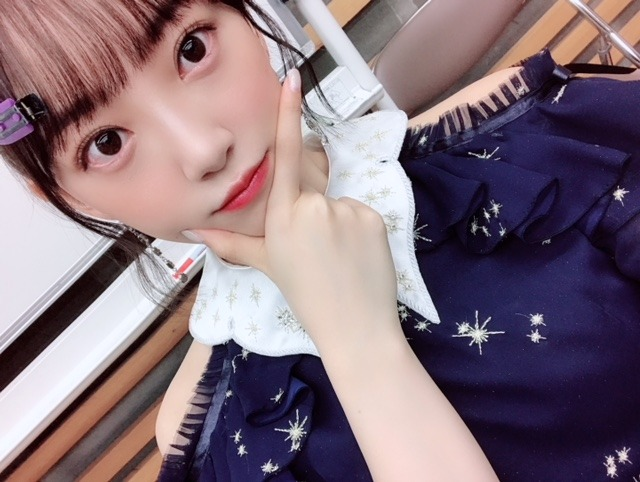

2018/1218Tue6月28日全国ロードショー
映画ホットギミックの公開日が
来年2019年の6月28日に決まりました！
来年の夏はホットギミックで
キュンキュンだけではない
新たな恋愛映画の形を見ていただけたら
嬉しいです

どんな作品になってるかな〜
わくわく
写ルンです の良さは
時間が経ってから現像して見返して
懐かしみながら
より一瞬一瞬の瞬間の大切さに気づけるところ。
あとは色合いがかわいい！
2019年はもっともっとカメラを活用します☺︎
一眼...チェキ...フィルム...写ルンです
たくさん撮ろうっ

まいちゅんとくだらない話をして笑い合うのが好き
お互いいいくらいに"適当"なのでラクです
先日のFNS歌謡祭
見て下さった方々ありがとうございました！！！
自分好みのクリスマスソングを
毎日聴いてるくらいクリスマスが好きだから
メドレー楽しかったな〜✨
ちなみにハートのイヤリングの
ブランドを聞かれますが
韓国のホンデの雑貨屋さんで買いました
ブランド名分からず
ちなみにハートのイヤリングの
ブランドを聞かれますが
韓国のホンデの雑貨屋さんで買いました
ブランド名分からず
お役に立てなくてすみませんm(__)m
コラボでは
AKB48さん 欅坂46さん IZ *ONEさんと
"必然性"を歌わせていただきました
歌詞もダンスも力強く
アイドルらしさが思う存分詰め込んであって
好きな曲です
IZ*ONEのユリさんとペアの振りが多くて
目を合わせるとニコッてしてくださるのが
可愛くて密かに胸がギュンギュンしてました...
改めてパフォーマンスをすることの楽しさを実感！
コラボでは
AKB48さん 欅坂46さん IZ *ONEさんと
"必然性"を歌わせていただきました
歌詞もダンスも力強く
アイドルらしさが思う存分詰め込んであって
好きな曲です
IZ*ONEのユリさんとペアの振りが多くて
目を合わせるとニコッてしてくださるのが
可愛くて密かに胸がギュンギュンしてました...
改めてパフォーマンスをすることの楽しさを実感！

21日はMステスーパーライブ
24日はCDTV と、生放送歌番組が続くので
クリスマス気分でチキンをつまみながら
見てくださったら嬉しいです(^-^)
堀家もクリスマスパーティーしたいなぁ！
あ、
1人でとんかつを食べに行った時のはなし
忙しいランチ時に店員の女性が1人で
堀家もクリスマスパーティーしたいなぁ！
あ、
1人でとんかつを食べに行った時のはなし
忙しいランチ時に店員の女性が1人で
手際よく動いてらっしゃるのをみて、
忙しいのにおかわりとかにも気配りが凄くて、
日本の素晴らしさってテキパキとした要領の良さの中にある品と気遣いなんだなぁと何だか嬉しくなりました
素敵でした！
私も気品溢れる女性になりたいな
そしてとんかつ美味しかったです✨
素敵でした！
私も気品溢れる女性になりたいな
そしてとんかつ美味しかったです✨

茶髪ロングが思ったより好評らしく？
(特に女の子)嬉しいです！
また映画宣伝期間は黒髪にするかな〜
と予想してるので
今の髪型は今で楽しんでいただけたら嬉しいです...！
してほしいヘアアレンジがあったら
是非教えてください☺︎
告知
では☺︎
告知
ar
遊・悠・WesT九州版2018冬号(表紙)
月刊TVガイド
EX大衆
12/19 週刊東京ウォーカー+
12/20 東海ウォーカー(表紙)
12/25 OVERTURE
12/26 withでは☺︎
2018/12/18 17:30
コメント(412)
みおなとまいちゅん好きーー！！！！
せっかく髪長いから、裏編み込みとかどうですか？クリスマスカラーのリボンとか付けたら、絶対可愛いと思う♡
来年の楽しみが増えました!!
来年の楽しみが増えました!!
ザンビ出られるんですね
舞台には行かれかったので
画面で見るの楽しみにしています
飛鳥ちゃんのことは
飛鳥ちゃんでも飛鳥さんてもなく
呼び捨てなんですか？
舞台には行かれかったので
画面で見るの楽しみにしています
飛鳥ちゃんのことは
飛鳥ちゃんでも飛鳥さんてもなく
呼び捨てなんですか？
コメント失礼します！！
映画を楽しみにこれから頑張ります笑
写真の現像するときってなんかテンション上がりますよね笑
年末は歌番組が多くなるので楽しみしてます（＾_＾）
ブログ更新ありがとう
映画を楽しみにこれから頑張ります笑
写真の現像するときってなんかテンション上がりますよね笑
年末は歌番組が多くなるので楽しみしてます（＾_＾）
ブログ更新ありがとう
こんばんは
未央奈ちゃんが連続して雑誌に掲載させて嬉しいです
年末は歌番組の出演が続きますが、無理はしないでくださいね
時には、参加せずに、休む事も大事な事ですからね
ホットギミックの上映まで、約半年、待ち遠しいですね
楽しみにしていますね☺️
未央奈ちゃんが連続して雑誌に掲載させて嬉しいです
年末は歌番組の出演が続きますが、無理はしないでくださいね
時には、参加せずに、休む事も大事な事ですからね
ホットギミックの上映まで、約半年、待ち遠しいですね
楽しみにしていますね☺️
茶髪ロングめっちゃ可愛い！！
映画楽しみにしてます！！
映画楽しみにしてます！！
ブログ更新ありがとう〜
とんかつ食べたくなったw
ホットギミック楽しみ！
この調子で来年に本当に連ドラとか出演できるといいね♪
もちろんザンビも見ます！
必然性はある意味センターで客観的に見ても目立ってたよ！そして改めて、可愛すぎだなと思ったw
とんかつ食べたくなったw
ホットギミック楽しみ！
この調子で来年に本当に連ドラとか出演できるといいね♪
もちろんザンビも見ます！
必然性はある意味センターで客観的に見ても目立ってたよ！そして改めて、可愛すぎだなと思ったw
三つ編みやって欲しい！ぜったいかわいい！
みおちゃんのウォーカー表紙買いました！
茶髪のみおちゃんほんと可愛すぎです！(;o;)
映画絶対見ます！！
茶髪のみおちゃんほんと可愛すぎです！(;o;)
映画絶対見ます！！
見ます！！！！！！！！
めっちゃ似合ってる
かわゆ！
かわゆ！
映画楽しみ～！
あと！レザーフェイスまた見たんだね！
また見てみようと思います。
そういえば、さっき来るって映画見て来たよー！！
あと！レザーフェイスまた見たんだね！
また見てみようと思います。
そういえば、さっき来るって映画見て来たよー！！
横わけ黒髪ロングで大きなリボン付きでお願いします。えへっ
未央奈ー❗️
ブログありがとう❗️
ホットギミック絶対見るよ✨
来年ドラマにもゲストで出るんだよね⁉️⁉️
それも楽しみ✨
今日もレコメン✔️聴くよ
４枚目の写真レコメンポーズ⁉️⁉️
そのポーズ好き❗️
ゆうたんより
ブログありがとう❗️
ホットギミック絶対見るよ✨
来年ドラマにもゲストで出るんだよね⁉️⁉️
それも楽しみ✨
今日もレコメン✔️聴くよ
４枚目の写真レコメンポーズ⁉️⁉️
そのポーズ好き❗️
ゆうたんより
ホットギミックの公開待ち遠しい…
映画館の大スクリーンで女優未央奈ちゃん観れるなんて最高に幸せです(´；ω；｀)
相変わらずステキな風景写真取撮りますね♡
未央奈ちゃんが撮る写真、とても好きです。
明日もお互い頑張りましょね！
ハスキーボイス、早く治りますように。
おやすみなさい。
映画館の大スクリーンで女優未央奈ちゃん観れるなんて最高に幸せです(´；ω；｀)
相変わらずステキな風景写真取撮りますね♡
未央奈ちゃんが撮る写真、とても好きです。
明日もお互い頑張りましょね！
ハスキーボイス、早く治りますように。
おやすみなさい。
トンカツ大好き!お疲れ様です☆ ホットギミックの上映首を長～くして楽しみにしてます(ノ´∀｀*) 年末体調第一に楽しんで下さいね☆ それと、お忙しい中ブログ更新ありがとうございます。いつも楽しく拝見させてもらってます♪ では(￣∇￣*)ゞ
ブログ更新ありがとう！
ホットギミックの公開日ありがとう！来年の6月28日が既に待ち遠しいです。
そして、ザンビの出演も決まって楽しみが沢山あります。
茶髪のロングもすごい好きです。
いろんな未央奈が見られて幸せです。
最近はまた寒くなりましたし、お仕事も年末に向けてお忙しいと思いますが、体調には十分に気をつけてください。
同じ岐阜県出身者として、いつも応援してます！
頑張ってくださいね！
ホットギミックの公開日ありがとう！来年の6月28日が既に待ち遠しいです。
そして、ザンビの出演も決まって楽しみが沢山あります。
茶髪のロングもすごい好きです。
いろんな未央奈が見られて幸せです。
最近はまた寒くなりましたし、お仕事も年末に向けてお忙しいと思いますが、体調には十分に気をつけてください。
同じ岐阜県出身者として、いつも応援してます！
頑張ってくださいね！
最近とてもアイドルらしいです。
いい意味でも。
とても好きです、
いい意味でも。
とても好きです、
Hay未央奈(･∀･∩)
まだ12月すよ未央ちゃん(^^)。笑
半年先なら映画の事忘れてそう。笑
俺も来月染めようかのー飛鳥ちゃんみたいに良い子ちゃんじゃないから俺っちウェーイ＼(^o^)／。笑
未央奈が勧めてるレザーフェース..？
怖いなら借りてみるー自分がホラー慣れしたのか気になる。笑
ノンビリ未央奈がテキパキ動いてたら..それこそホラーだよ(^^)。笑
オーマイ！オッオッオエイオウーマンマミーア＼(^o^)／。笑
..オーイェイイェイ！並に衝撃的すな。笑
今はアイズワンの曲を聴き漁ってるー。笑
おやすみなさいなのです
まだ12月すよ未央ちゃん(^^)。笑
半年先なら映画の事忘れてそう。笑
俺も来月染めようかのー飛鳥ちゃんみたいに良い子ちゃんじゃないから俺っちウェーイ＼(^o^)／。笑
未央奈が勧めてるレザーフェース..？
怖いなら借りてみるー自分がホラー慣れしたのか気になる。笑
ノンビリ未央奈がテキパキ動いてたら..それこそホラーだよ(^^)。笑
オーマイ！オッオッオエイオウーマンマミーア＼(^o^)／。笑
..オーイェイイェイ！並に衝撃的すな。笑
今はアイズワンの曲を聴き漁ってるー。笑
おやすみなさいなのです
更新ありがとう
映画楽しみに待ってます！後ザンビも！
髪型はロングもいいけどショートが一番です！
映画楽しみに待ってます！後ザンビも！
髪型はロングもいいけどショートが一番です！
未央奈ちゃんブログ更新ありがとう
ホットギミック公開日決まったんだね 絶対に見に行くよ
絶対に見に行くよ
今の髪型めっちゃ似合ってて可愛いよ
ホットギミック公開日決まったんだね
今の髪型めっちゃ似合ってて可愛いよ
未央奈ちゃん、ひろっしーです！コメント投稿546回目です！
前回はブログ「優しさと強さ」の感想を書きました！
時間→「No.346 2018年12月19日 16:57」
今回はブログ「6月28日全国ロードショー」の感想を書かせて頂きます！
映画「ホットギミック」が2019年6月28日に公開される事が決定しましたね！恋愛映画って全然観ないので今から来年の夏が楽しみです！
結構写真はスマホで撮りがちですが、やっぱりカメラで撮った方が良いですよね！出来上がるまで時間がかかる分、思い出が詰まった1枚が出来ますし！そう言いながら僕もスマホでしか撮っていないんですけどね(笑)
来年は「撮り未央奈」としても頑張ってね！
「2018FNS歌謡祭 第2夜」勿論観ました！
メドレーの最後にロング未央奈ちゃんを含む、物凄く可愛い乃木坂サンタに癒されました！
IZ4648のコラボ曲「必然性」はザ･アイドルの曲で僕も凄く好きです！このコラボ何回観ても毎回凄いなと思うし、ポジションも裏センターだし、凄く嬉しいです！ぜひ商品化希望です！
とんかつの話ですが、その女性の店員さん凄いですね！話を聞いてテキパキした要領の良さに憧れます！とんかつ美味くて良かったですね！あと、これは働き始めてからなんですが、店に行っても今までより店員さんがどう動いているのかをついつい見てしまいます！
年末もテレビや雑誌で大忙しですね！
嬉しい限りですが、無理はしちゃダメだよ！
今回も可愛い写真ありがとうございました(癒)
今週も「レコメン！」お疲れ様でした！
ハスキーボイスが治っていて一安心しました！
クリスマスプレゼントが未央奈ちゃん！？
控えめに言って・・・最高だ～！嬉しすぎる！
ここまで読んで頂きありがとうございました！
毎日お仕事お疲れ様です！体調にはくれぐれも気を付けて頑張ってくださいね！
おやすみおな～！
前回はブログ「優しさと強さ」の感想を書きました！
時間→「No.346 2018年12月19日 16:57」
今回はブログ「6月28日全国ロードショー」の感想を書かせて頂きます！
映画「ホットギミック」が2019年6月28日に公開される事が決定しましたね！恋愛映画って全然観ないので今から来年の夏が楽しみです！
結構写真はスマホで撮りがちですが、やっぱりカメラで撮った方が良いですよね！出来上がるまで時間がかかる分、思い出が詰まった1枚が出来ますし！そう言いながら僕もスマホでしか撮っていないんですけどね(笑)
来年は「撮り未央奈」としても頑張ってね！
「2018FNS歌謡祭 第2夜」勿論観ました！
メドレーの最後にロング未央奈ちゃんを含む、物凄く可愛い乃木坂サンタに癒されました！
IZ4648のコラボ曲「必然性」はザ･アイドルの曲で僕も凄く好きです！このコラボ何回観ても毎回凄いなと思うし、ポジションも裏センターだし、凄く嬉しいです！ぜひ商品化希望です！
とんかつの話ですが、その女性の店員さん凄いですね！話を聞いてテキパキした要領の良さに憧れます！とんかつ美味くて良かったですね！あと、これは働き始めてからなんですが、店に行っても今までより店員さんがどう動いているのかをついつい見てしまいます！
年末もテレビや雑誌で大忙しですね！
嬉しい限りですが、無理はしちゃダメだよ！
今回も可愛い写真ありがとうございました(癒)
今週も「レコメン！」お疲れ様でした！
ハスキーボイスが治っていて一安心しました！
クリスマスプレゼントが未央奈ちゃん！？
控えめに言って・・・最高だ～！嬉しすぎる！
ここまで読んで頂きありがとうございました！
毎日お仕事お疲れ様です！体調にはくれぐれも気を付けて頑張ってくださいね！
おやすみおな～！
堀ちゃんブログありがとー。
FNS歌謡祭お疲れ様です
これから音楽番組続きますね
頑張ってください！
FNS歌謡祭お疲れ様です
これから音楽番組続きますね
頑張ってください！
堀さん、こんばんは。
EX大衆見ました。山戸監督から”支える”ことの大切さを吸収したんですね。このブログの店員さんの話も誰かの頑張りへのアンテナが立ってたって側面もあったのでしょうか。
インタビュー全体を通して堀さんの頼もしさが伝わってきました。でも、監督が居ない場所で堀さんの悩みに誰が気付くんだろうって少しだけ思いました。悩みが晴れたら似た悩みを持った人を救えるから、悩みの独り占めはいけないってことなんでしょうね。口に出さない悩みにも気付く人に堀さんがもっと出会えていけたら、それで堀さんも誰かのそういう存在になっていけたらいいですね。
あとレザーフェイスを映画館に続いてレンタルでも見るなんて相当好きだったんですね。近いうちに借りに行きます。
EX大衆見ました。山戸監督から”支える”ことの大切さを吸収したんですね。このブログの店員さんの話も誰かの頑張りへのアンテナが立ってたって側面もあったのでしょうか。
インタビュー全体を通して堀さんの頼もしさが伝わってきました。でも、監督が居ない場所で堀さんの悩みに誰が気付くんだろうって少しだけ思いました。悩みが晴れたら似た悩みを持った人を救えるから、悩みの独り占めはいけないってことなんでしょうね。口に出さない悩みにも気付く人に堀さんがもっと出会えていけたら、それで堀さんも誰かのそういう存在になっていけたらいいですね。
あとレザーフェイスを映画館に続いてレンタルでも見るなんて相当好きだったんですね。近いうちに借りに行きます。
EX大衆1月号購入いたしました。堀殿×かりんちゃん×まいちゅんの対談記事貪欲に読んでおりまふσ(´∀`●)ｱﾀｼ ♡クリエイティブな2期生の皆さんが好き好きピーナッツ▼o◎ｪ◎o▼レコメン堀殿♡聴きました。堀殿ボイスに癒されうれぴーぽーo(￣◎￣)o ﾊﾞﾌﾞｩ♡きしめんかつお節おにぎり♡あたまいい役トークけんぴゅー[岩蔭|](ｴ)￣) ほんじつもときめきかつ丼パワー100万馬力でばいころまる( ;-(ｴ)-)ゞｸﾏｯﾀﾅｧ…
堀ちゃん、ドラマ出演おめでとうー
これで堀ちゃんの夢に一歩近づくね！
やったー！
これで堀ちゃんの夢に一歩近づくね！
やったー！
おはようございます！
東京ビッグサイト個握ありがとうございました！
声は聞けなかったけど、表情やジェスチャーで誕生日祝ってもらえて嬉しかったです(￣ー￣)ｂ
岐阜から頑張って行ったかいがありました！
年末忙しいと思いますが体調気を付けて頑張ってください！！
おはよう、みおな❗️❗️(笑)
体調はどう❓️
少しは良くなったのかな❓️
でも、まだまだ油断は禁物よ・・・
みおなは、若干、回復にも時間がかかっちゃうタイプだから・・・
スケジュール的にも、これから生放送が多くて、リハーサル、待ち時間も含めて、結構、長丁場な仕事になるのかもしれない・・・
くれぐれも無理しないようにね・・・
今のロングの髪型、ほんと、かわいいよ❗️❗️(笑)
前に伸ばしていた時よりも、スゴく大人っぽくなったし、そのぶん成長してるんだね・・・
いろんなアレンジもできるから、みおなも楽しいんじゃない❓️(笑)
歌番組でもさ、みおな、今日はどんな髪型でくるのかな、なんて楽しみもある・・・(笑)
握手会の日に送ってくれた、高めのツインもいいし、ポニーテールもいいよね❗️(笑)
まぁ、楽しみにしています❗️(笑)
それじゃ、またね❗️❗️(笑)
体調はどう❓️
少しは良くなったのかな❓️
でも、まだまだ油断は禁物よ・・・
みおなは、若干、回復にも時間がかかっちゃうタイプだから・・・
スケジュール的にも、これから生放送が多くて、リハーサル、待ち時間も含めて、結構、長丁場な仕事になるのかもしれない・・・
くれぐれも無理しないようにね・・・
今のロングの髪型、ほんと、かわいいよ❗️❗️(笑)
前に伸ばしていた時よりも、スゴく大人っぽくなったし、そのぶん成長してるんだね・・・
いろんなアレンジもできるから、みおなも楽しいんじゃない❓️(笑)
歌番組でもさ、みおな、今日はどんな髪型でくるのかな、なんて楽しみもある・・・(笑)
握手会の日に送ってくれた、高めのツインもいいし、ポニーテールもいいよね❗️(笑)
まぁ、楽しみにしています❗️(笑)
それじゃ、またね❗️❗️(笑)
おぱよう。セブンやよ(ฅ'ω'ฅ)♪
今朝の音楽はなんですか？
オレはランダム再生の結果三代目でした
うん、上げてこー
来年の目標の一つとして
映画をもっといっぱい観ようと思います。
今年は6本くらいしか観なかったので来年は12本は観よう！
未央奈は今年何本観たんですか？
100くらいいってんのかな？！
来年は出る側としても活躍楽しみにしてます
ホットギミックめっちゃ楽しみ(≧∀≦)
では、今日も1日楽しもうd(@^∇ﾟ)/ﾌｧｲﾄｯ♪
o(ﾟ▽＾)ﾉｼまたねぃ♪
今朝の音楽はなんですか？
オレはランダム再生の結果三代目でした
うん、上げてこー
来年の目標の一つとして
映画をもっといっぱい観ようと思います。
今年は6本くらいしか観なかったので来年は12本は観よう！
未央奈は今年何本観たんですか？
100くらいいってんのかな？！
来年は出る側としても活躍楽しみにしてます
ホットギミックめっちゃ楽しみ(≧∀≦)
では、今日も1日楽しもうd(@^∇ﾟ)/ﾌｧｲﾄｯ♪
o(ﾟ▽＾)ﾉｼまたねぃ♪
ＦＮＳ歌謡祭のハートのイヤリングとロングヘアがめちゃめちゃ可愛かったです！
ホットギミック6月２８日楽しみです！
ホットギミック6月２８日楽しみです！
Mステスーパーライブ観覧行くよん！
楽しみに待ってるね！！
残り少ない大切な時間を大事にしたい
いつも応援してます！！
楽しみに待ってるね！！
残り少ない大切な時間を大事にしたい
いつも応援してます！！
ホットギミック公開日
決まったんだね！
おめでとう♡
楽しみにしてるよ～～！！
12/19のレコメンできてた
ピンクのタートルネックニット
どこのかなぁ？
すごくかわいいからおそろいにしたい！
よかったら、教えてね♡
決まったんだね！
おめでとう♡
楽しみにしてるよ～～！！
12/19のレコメンできてた
ピンクのタートルネックニット
どこのかなぁ？
すごくかわいいからおそろいにしたい！
よかったら、教えてね♡
聖子ちゃんカット。絶対似合う！
圧倒的にツインテールがみたいです！！
あ、ハーフツインもみたいです。
だいすき！！！
あ、ハーフツインもみたいです。
だいすき！！！
未央奈ブログ更新ありがとう〜
未央奈の主演映画絶対見に行くからね〜〜〜
必然性いい曲だったよ
しかも隣があしゅで裏のダブルセンターだったね笑笑
まだまだ年末年始音楽番組があるけど風邪ひかないようにお仕事頑張ってね
未央奈をいつまでも応援してます〜
ユーキー
未央奈の主演映画絶対見に行くからね〜〜〜
必然性いい曲だったよ
しかも隣があしゅで裏のダブルセンターだったね笑笑
まだまだ年末年始音楽番組があるけど風邪ひかないようにお仕事頑張ってね
未央奈をいつまでも応援してます〜
ユーキー
みおなだいすき！！！！
高めツインテしてほしい！！❤
高めツインテしてほしい！！❤
ホットギミックの公開が待ち切れない
必ず観ます！
『必然性』のパフォーマンス最高でした
最後のウィンクには心鷲掴みにされました
必ず観ます！
『必然性』のパフォーマンス最高でした
最後のウィンクには心鷲掴みにされました
みおな、おつかれ～❗️❗️(笑)
撮影なんだって❓️
from 真夏さん・・・(笑)
晴れ着のみおな、かわいすぎだよ❗️❗️❗️❗️(笑)
しかも、高めのツイン❗️❗️❗️(笑)
２年前の、成人の時もかわいかったけど・・・
あの頃はあの頃でかわいかったけど、今の方が好きだな・・・
それにしても、小悪魔だね❗️❗️(笑)
これは変わらず❗️(笑)
早く春にならないかな・・・(笑)
みおなに会いたいな・・・(笑)
今週の大阪はさすがに行けないので・・・
春までのお楽しみ、だね❗️(笑)
そう、みおな、唇をこうやってやると、結構ポテッとして、グロスピカピカにすると、またまた色っぽいんだよね・・・
ん～、たまらん❗️❗️(笑)
肌も相変わらずキレイで・・・
いいね❗️❗️(笑)
無理しないようにね、休みながら、楽しくね❗️❗️(笑)
それじゃ、またね❗️❗️(笑)
ありがとう❗️(笑)
撮影なんだって❓️
from 真夏さん・・・(笑)
晴れ着のみおな、かわいすぎだよ❗️❗️❗️❗️(笑)
しかも、高めのツイン❗️❗️❗️(笑)
２年前の、成人の時もかわいかったけど・・・
あの頃はあの頃でかわいかったけど、今の方が好きだな・・・
それにしても、小悪魔だね❗️❗️(笑)
これは変わらず❗️(笑)
早く春にならないかな・・・(笑)
みおなに会いたいな・・・(笑)
今週の大阪はさすがに行けないので・・・
春までのお楽しみ、だね❗️(笑)
そう、みおな、唇をこうやってやると、結構ポテッとして、グロスピカピカにすると、またまた色っぽいんだよね・・・
ん～、たまらん❗️❗️(笑)
肌も相変わらずキレイで・・・
いいね❗️❗️(笑)
無理しないようにね、休みながら、楽しくね❗️❗️(笑)
それじゃ、またね❗️❗️(笑)
ありがとう❗️(笑)
堀さんの感性は、素晴らしいので、いつの日にか、堀さんの写真展が開かれると思います。とんかつの話も、おもしろかったです。一人で食べに行かれるところも、カッコイイですし、勉強になる、とてもいいエッセイですね、堀さんなら、きっと直木賞とれます。あと歌番組で見る、堀さんの所作や仕草は、とても魅力的で、堀さんが一番素敵です。
堀ちゃん！！
映画宣伝期間の時は、黒髪のショートが見たいなぁ。
ホットギミック絶対みるね！だいすき！
こんにちは
レコメン！面白かったです！
喉が治ってとっても安心しましたよ～
やっぱり普段の声の方が魅力的です♡
ピンク色のニットも凄く似合ってるし、
写真はもちろんスマホに入れてますよ♪
ロング髪で印象も変わって新鮮ですね～
ツインテールの振袖姿も可愛いですよ☆
そして、ザンビもとっても楽しみです☺
レコメン！面白かったです！
喉が治ってとっても安心しましたよ～
やっぱり普段の声の方が魅力的です♡
ピンク色のニットも凄く似合ってるし、
写真はもちろんスマホに入れてますよ♪
ロング髪で印象も変わって新鮮ですね～
ツインテールの振袖姿も可愛いですよ☆
そして、ザンビもとっても楽しみです☺
映画楽しみにしてまーす
堀ちゃんはポニーテールが個人的に1番可愛かったなぁー
堀ちゃんはポニーテールが個人的に1番可愛かったなぁー
みおなちゃん更新ありがとう╰(*´︶`*)╯♡
ホットギミックの公開日が決定したんだねー(*´꒳`*)
楽しみにしております（╹◡╹）♡
写真ありがと〜
まいちゅんとの写真も良きです
FNS歌謡祭お疲れ様でした(*´-`)
リアルタイムで観れたよー
コラボ企画では選抜おめでとう！！
クリスマスメドレーも含めて楽しめて良きでしたね♪(๑ᴖ◡ᴖ๑)♪
Mステ、CDTVも観るねー･:*+.\(( °ω° ))/.:+
1人でとんかつ食べに行ったんだねー
たまに店員さんでテキパキ仕事出来る人いるよね(´⊙ω⊙`)
自分も接客業なので見習いたいです(*ﾟ▽ﾟ)ﾉ
茶髪ロングも可愛かです
ツインテールが見たいかも（╹◡╹）♡
お知らせありがと〜
チェックしますねー(● ˃̶͈̀ロ˂̶͈́)੭ꠥ⁾⁾
ホットギミックの公開日が決定したんだねー(*´꒳`*)
楽しみにしております（╹◡╹）♡
写真ありがと〜
まいちゅんとの写真も良きです
FNS歌謡祭お疲れ様でした(*´-`)
リアルタイムで観れたよー
コラボ企画では選抜おめでとう！！
クリスマスメドレーも含めて楽しめて良きでしたね♪(๑ᴖ◡ᴖ๑)♪
Mステ、CDTVも観るねー･:*+.\(( °ω° ))/.:+
1人でとんかつ食べに行ったんだねー
たまに店員さんでテキパキ仕事出来る人いるよね(´⊙ω⊙`)
自分も接客業なので見習いたいです(*ﾟ▽ﾟ)ﾉ
茶髪ロングも可愛かです
ツインテールが見たいかも（╹◡╹）♡
お知らせありがと〜
チェックしますねー(● ˃̶͈̀ロ˂̶͈́)੭ꠥ⁾⁾
お久しぶりです。 未央奈さん、顔付き変わった気がします。
良い意味でです。（＾－＾）
髪伸びたね！
ボブも似合うけど、この長さも似合うなぁー。
全部かわいい。
ボブも似合うけど、この長さも似合うなぁー。
全部かわいい。
歌謡祭見ましたかわいかったねまた来年の映画公開楽しみだね
コラボの時の未央奈がめっちゃ眩しかった！
ほんと表情も何もかもキレキレで！
あとは、アンダーライブで君に贈る花がないを見れたのは本当に嬉しかった！
メロディも歌詞もワクワクするし、でも切ないし、大好きな曲だったから。
サンクエトワールの絆を感じました。
ほんと表情も何もかもキレキレで！
あとは、アンダーライブで君に贈る花がないを見れたのは本当に嬉しかった！
メロディも歌詞もワクワクするし、でも切ないし、大好きな曲だったから。
サンクエトワールの絆を感じました。
ホットギミック公開決まったんだー！
絶対見に行こ！
体調に気をつけてハスキーにならないようにね！
絶対見に行こ！
体調に気をつけてハスキーにならないようにね！
未央奈ちゃんありがとうございます‼頑張ります‼頑張って下さい！ありがとうございます‼頑張ります‼


でも楽しみが延びるのもまた良きかな♪
IZ4648は伝説になりますね！
『必然性』はテレビから録音したものを繰り返し聴いてますよ♪☆